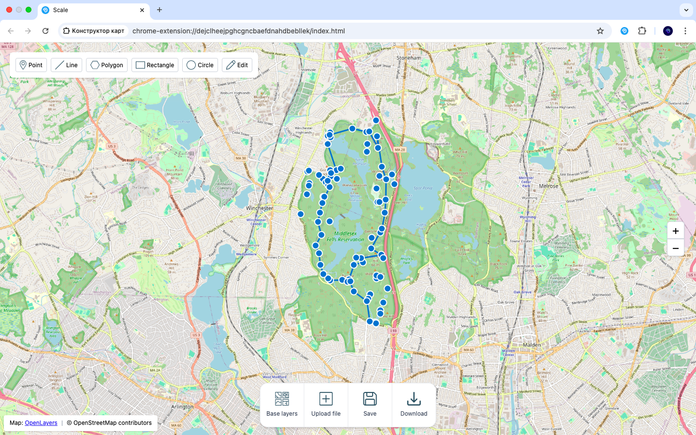

Main Features
🖊️ Draw on Map
Add points, lines, and shapes directly to the interactive map.
📥 Import Files
Open GPX, KML, KMZ, and GeoJSON geodata files with ease.
✏️ Edit & Annotate
Edit and annotate map features instantly, no software needed.
💾 Export as GeoJSON
Save your map and edits in the popular GeoJSON format.

How It Works
Install the extension
from Chrome Web Store
from Chrome Web Store
→
Import your file
GPX, KML, KMZ or GeoJSON
GPX, KML, KMZ or GeoJSON
→
Draw & Edit
directly on the interactive map
directly on the interactive map
→
Export as GeoJSON
and use anywhere
and use anywhere
About Extension
OpenLayers
Library for interactive maps and geospatial data visualization.
@tmcw/togeojson
Converter for transforming KML and GPX files into GeoJSON format.
Tailwind CSS
Utility-first CSS framework for responsive and modern UI design.
JSZip
Library for reading and extracting KMZ (zipped KML) files directly in the browser.
react-hot-toast
Elegant toast notifications for user feedback and alerts.
Map tiles
OpenStreetMap & Esri World Imagery are used as base maps.